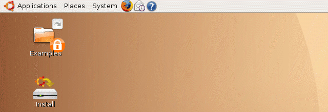
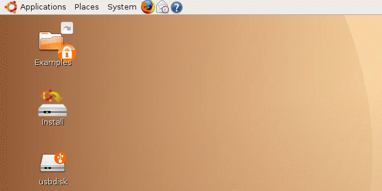
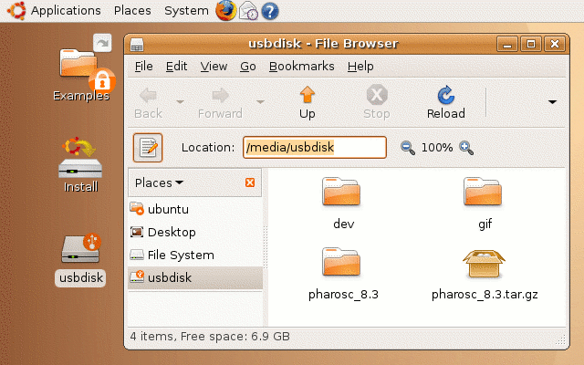

| vlsitechnology.org /Live CD help /startup window | |
Live CD startup window | |
Linux help
Windows help
Linux Live CD
The Ubuntu Live CD startup window is very simple. A panel across the top is similar to the Apple MAC operating system with applications grouped under three headings.

When a USB drive is inserted, an icon appears on the desktop, Apple MAC style. To remove the drive, it is safer first to right click on the icon and select Eject. When the icon disappears, then it is safe to remove the drive. To view the contents in a Windows Explorer type interface, either double click the icon, right click and choose Open or Browse Folder.

In order to use data on the USB drive from a terminal command line, its explicit location must be used. This can be found by clicking on the toggle button to the left of the word Location:, which shows that the USB drive is at /media/usbdisk.
To navigate to say the pharosc_8.3 directory on the USB drive, in the terminal window type
$ cd /media/usbdisk/pharosc_8.3 |
